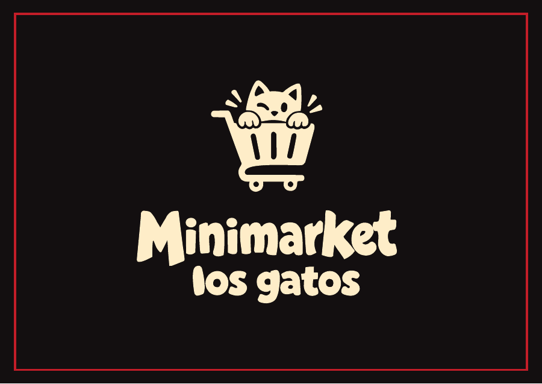

Identidad visual
Minimarket Los Gatos
Del apodo de mi familia a la identidad de nuestro minimarket.
Historia, aplicaciones y cuña
El apodo de mi familia dio origen al nombre del negocio. Reuní un gato y un carrito de compras en un solo símbolo para que esa historia acompañe a la marca.
En el manual llevé la marca a una mascota, un patrón de iconos y piezas para redes. También trabajé su identidad sonora con esta cuña comercial.
Abrir logotipo ↗